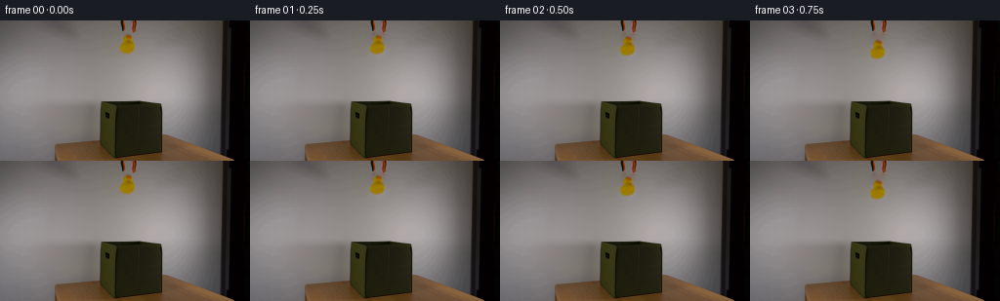
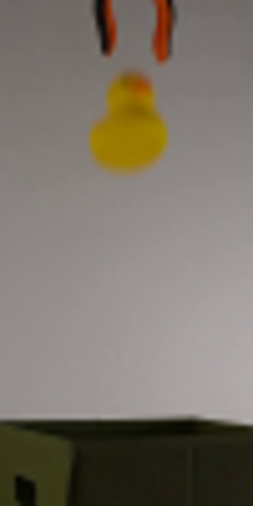
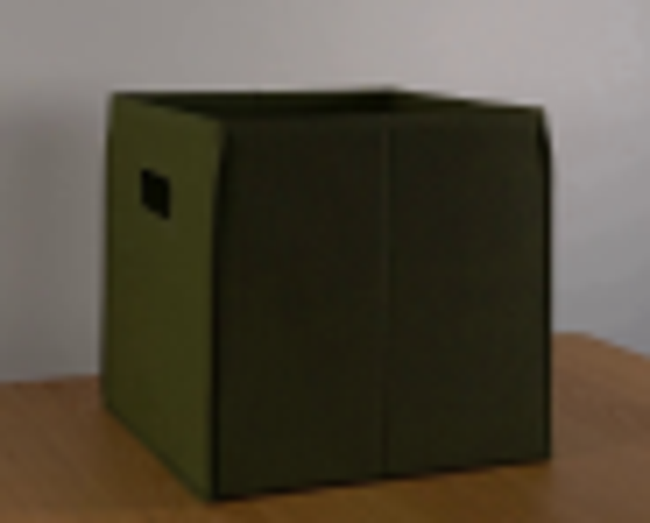
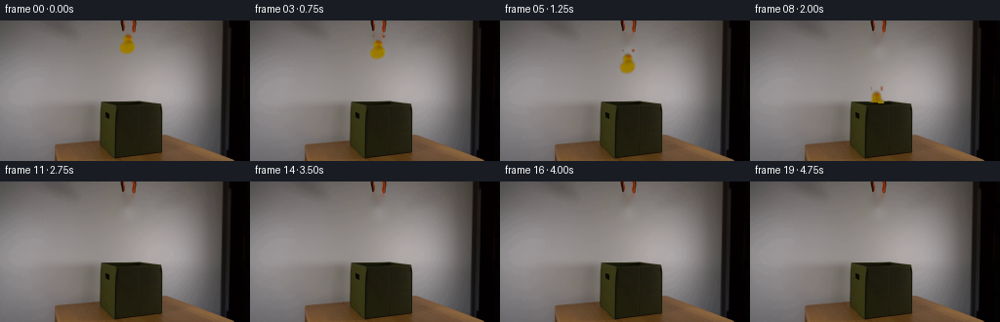
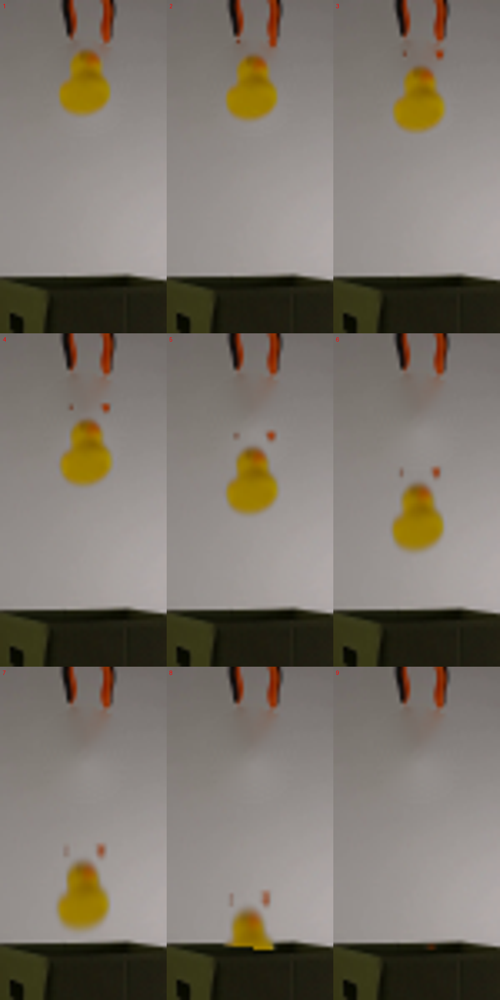
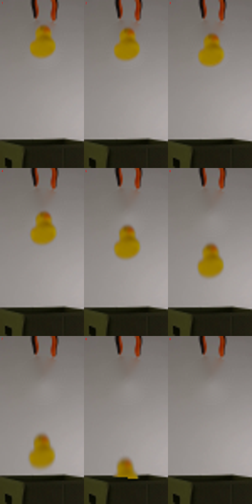

CODING AGENTS AS PIXEL WORLD MODELS
traex/GPT-5.6-Sol · 0058
点击播放 · 原生 RGB 像素
逐轮保存的候选
回放视频、检查图与代码变化。
每份候选均可单独播放。实际图片检查记录在下方工具轨迹中。
候选 01播放与检查图
点击播放 · 原生 RGB 像素

展开代码变化
--- 上一保存版本
+++ 本次保存版本
@@ -0,0 +1,111 @@
+from pathlib import Path
+import cv2
+import numpy as np
+from PIL import Image
+import artifact_io
+
+# Locked-off photographic plate. The only moving item is the released duck.
+CASE_DIR = Path(__file__).resolve().parent
+plate = np.asarray(Image.open(CASE_DIR / "first_frame.png").convert("RGB"), dtype=np.uint8)
+H, W = plate.shape[:2]
+
+# Reconstruct the small patch of plain wall hidden by the duck. The mask stays
+# clear of the grabber tips above it, so those remain genuine camera pixels.
+hole = np.zeros((H, W), np.uint8)
+cv2.ellipse(hole, (130, 26), (12, 13), 0, 0, 360, 255, -1)
+hole[12:38, 119:142] = np.maximum(hole[12:38, 119:142], 0)
+hole = cv2.dilate(hole, np.ones((3, 3), np.uint8), iterations=1)
+clean = cv2.inpaint(cv2.cvtColor(plate, cv2.COLOR_RGB2BGR), hole, 4, cv2.INPAINT_TELEA)
+clean = cv2.cvtColor(clean, cv2.COLOR_BGR2RGB)
+
+# Build an antialiased cutout from the photographed duck. Saturation separates
+# yellow rubber (and its orange beak) very cleanly from the neutral gray wall.
+x0, y0, x1, y1 = 116, 10, 145, 41
+src = plate[y0:y1, x0:x1].astype(np.float32)
+base = clean[y0:y1, x0:x1].astype(np.float32)
+hsv = cv2.cvtColor(src.astype(np.uint8), cv2.COLOR_RGB2HSV).astype(np.float32)
+sat = hsv[..., 1] / 255.0
+# Favor warm pixels and use difference from the reconstructed plate to retain
+# the softly focused silhouette at the boundary.
+r, g, b = src[..., 0], src[..., 1], src[..., 2]
+warm = np.clip((np.minimum(r, g) - b - 3.0) / 42.0, 0.0, 1.0)
+difference = np.linalg.norm(src - base, axis=2)
+a = np.maximum(np.clip((sat - 0.07) / 0.52, 0, 1),
+ np.clip((difference - 8.0) / 90.0, 0, 1) * warm)
+a *= np.clip((warm + 0.20) / 0.55, 0, 1)
+a = cv2.GaussianBlur(a, (3, 3), 0.45)
+a[a < 0.025] = 0
+# Store premultiplied color for clean resampling.
+pm = src * a[..., None]
+
+# The original cutout has visual center around this point in full-frame pixels.
+cx, cy = 130.0, 25.5
+
+# A measured-looking gravity trajectory at 4 fps. The grabber is already open
+# in frame zero; after a brief hesitation the duck accelerates into the box.
+centers_y = [25.5, 26.0, 27.5, 31.0, 37.0, 45.5, 56.5, 70.0, 84.5,
+ 101.0, 119.0, 138.0, 158.0, 179.0, 201.0, 224.0, 248.0, 273.0, 299.0, 326.0]
+centers_x = [130.0, 130.0, 130.1, 130.3, 130.4, 130.2, 129.9, 129.5, 129.1,
+ 128.8, 128.7, 128.8, 129.0, 129.3, 129.5, 129.8, 130.0, 130.2, 130.3, 130.4]
+angles = [0, 0, 0.5, 1.2, 2.0, 2.8, 3.5, 4.0, 4.5, 5.0, 5.5, 6, 6, 6, 6, 6, 6, 6, 6, 6]
+
+
+def render_cutout(center_x, center_y, angle):
+ """Return transformed full-frame premultiplied RGB and alpha."""
+ # Transform directly from crop coordinates into the full frame.
+ local_c = (cx - x0, cy - y0)
+ M = cv2.getRotationMatrix2D(local_c, angle, 1.0)
+ M[0, 2] += center_x - cx + x0
+ M[1, 2] += center_y - cy + y0
+ # Since source coordinates are crop-local and destination is full-frame,
+ # the added crop origin maps the unchanged cutout back to its real location.
+ wa = cv2.warpAffine(a.astype(np.float32), M, (W, H), flags=cv2.INTER_CUBIC,
+ borderMode=cv2.BORDER_CONSTANT, borderValue=0)
+ wp = cv2.warpAffine(pm.astype(np.float32), M, (W, H), flags=cv2.INTER_CUBIC,
+ borderMode=cv2.BORDER_CONSTANT, borderValue=0)
+ wa = np.clip(wa, 0, 1)
+ wp = np.clip(wp, 0, 255)
+ return wp, wa
+
+
+frames = []
+for i in range(20):
+ if i == 0:
+ frames.append(plate.copy()) # contract: bit-for-bit identical first frame
+ continue
+
+ frame = clean.astype(np.float32)
+
+ # Exposure-integrated motion blur. It is almost absent at release and grows
+ # naturally with velocity. Samples are composited premultiplied-over.
+ prev_y = centers_y[i - 1]
+ velocity = centers_y[i] - prev_y
+ blur_fraction = min(0.28, 0.04 + abs(velocity) * 0.010)
+ samples = 3 if i >= 3 else 2
+ accum_pm = np.zeros((H, W, 3), np.float32)
+ accum_a = np.zeros((H, W), np.float32)
+ for s in range(samples):
+ phase = (s / max(1, samples - 1) - 0.5) * blur_fraction
+ sy = centers_y[i] + phase * velocity
+ sx = centers_x[i] + phase * (centers_x[i] - centers_x[i - 1])
+ wp, wa = render_cutout(sx, sy, angles[i])
+
+ # The near/front wall of the open fabric box occludes the descending
+ # duck. Its slightly sloped lip is read directly from the plate.
+ yy, xx = np.indices((H, W))
+ rim = 84.0 + 0.025 * (xx - 130.0)
+ visible = (yy < rim).astype(np.float32)
+ wa *= visible
+ wp *= visible[..., None]
+
+ accum_pm += wp / samples
+ accum_a += wa / samples
+
+ accum_a = np.clip(accum_a, 0, 1)
+ frame = accum_pm + frame * (1.0 - accum_a[..., None])
+ frames.append(np.clip(frame + 0.5, 0, 255).astype(np.uint8))
+
+frames = np.stack(frames, axis=0).astype(np.uint8)
+assert frames.shape == (20, 144, 256, 3)
+assert np.array_equal(frames[0], plate)
+artifact_io.save(frames, CASE_DIR)
候选 02播放与检查图
点击播放 · 原生 RGB 像素

展开代码变化
--- 上一保存版本 +++ 本次保存版本 @@ -20,7 +20,7 @@ # Build an antialiased cutout from the photographed duck. Saturation separates # yellow rubber (and its orange beak) very cleanly from the neutral gray wall. -x0, y0, x1, y1 = 116, 10, 145, 41 +x0, y0, x1, y1 = 116, 13, 145, 41 src = plate[y0:y1, x0:x1].astype(np.float32) base = clean[y0:y1, x0:x1].astype(np.float32) hsv = cv2.cvtColor(src.astype(np.uint8), cv2.COLOR_RGB2HSV).astype(np.float32)
可观测工具轨迹
实际执行的命令与返回图片。
命令 1exit 0
/bin/bash -lc "cat prompt.txt && printf '\\n---RULES---\\n' && cat GENERATION_RULES.md"
命令 2exit 1
/bin/bash -lc "find . -maxdepth 2 -type f -printf '%p\\n' | sort && printf '\\nTOOLS\\n' && command -v ffmpeg && command -v python3"
命令 3exit 0
/bin/bash -lc "sed -n '1,240p' artifact_io.py"
命令 4exit 0
/bin/bash -lc "python3 - <<'PY'
from PIL import Image
im=Image.open('first_frame.png')
im.crop((105,0,155,100)).resize((500,1000)).save('.tmp/crop.png')
print(im.mode,im.size)
PY"命令 5exit 0
/bin/bash -lc "python3 - <<'PY'
try:
import cv2; print('cv2',cv2.__version__)
except Exception as e: print(e)
try:
from PIL import Image; print('pil ok')
except Exception as e: print(e)
try:
import imageio; print('imageio', imageio.__version__)
except Exception as e: print(e)
PY"命令 6exit 0
/bin/bash -lc "python3 - <<'PY'
from PIL import Image
im=Image.open('first_frame.png')
im.crop((88,70,180,144)).resize((920,740)).save('.tmp/box.png')
PY"命令 7exit 0
/bin/bash -lc "python3 - <<'PY'
from PIL import Image
import numpy as np
im=np.array(Image.open('first_frame.png'))
for y in range(0,40):
xs=[]
for x in range(110,150):
r,g,b=im[y,x]
if r>90 and r>g*1.05 and g>b*1.3: xs.append(x)
if xs: print(y,min(xs),max(xs),[(x,im[y,x].tolist()) for x in xs[::max(1,len(xs)//3)]])
PY"命令 8exit 0
/bin/bash -lc "cat > generate.py <<'PY'
from pathlib import Path
import cv2
import numpy as np
from PIL import Image
import artifact_io
# Locked-off photographic plate. The only moving item is the released duck.
CASE_DIR = Path(__file__).resolve().parent
plate = np.asarray(Image.open(CASE_DIR / \"first_frame.png\").convert(\"RGB\"), dtype=np.uint8)
H, W = plate.shape[:2]
# Reconstruct the small patch of plain wall hidden by the duck. The mask stays
# clear of the grabber tips above it, so those remain genuine camera pixels.
hole = np.zeros((H, W), np.uint8)
cv2.ellipse(hole, (130, 26), (12, 13), 0, 0, 360, 255, -1)
hole[12:38, 119:142] = np.maximum(hole[12:38, 119:142], 0)
hole = cv2.dilate(hole, np.ones((3, 3), np.uint8), iterations=1)
clean = cv2.inpaint(cv2.cvtColor(plate, cv2.COLOR_RGB2BGR), hole, 4, cv2.INPAINT_TELEA)
clean = cv2.cvtColor(clean, cv2.COLOR_BGR2RGB)
# Build an antialiased cutout from the photographed duck. Saturation separates
# yellow rubber (and its orange beak) very cleanly from the neutral gray wall.
x0, y0, x1, y1 = 116, 10, 145, 41
src = plate[y0:y1, x0:x1].astype(np.float32)
base = clean[y0:y1, x0:x1].astype(np.float32)
hsv = cv2.cvtColor(src.astype(np.uint8), cv2.COLOR_RGB2HSV).astype(np.float32)
sat = hsv[..., 1] / 255.0
# Favor warm pixels and use difference from the reconstructed plate to retain
# the softly focused silhouette at the boundary.
r, g, b = src[..., 0], src[..., 1], src[..., 2]
warm = np.clip((np.minimum(r, g) - b - 3.0) / 42.0, 0.0, 1.0)
difference = np.linalg.norm(src - base, axis=2)
a = np.maximum(np.clip((sat - 0.07) / 0.52, 0, 1),
np.clip((difference - 8.0) / 90.0, 0, 1) * warm)
a *= np.clip((warm + 0.20) / 0.55, 0, 1)
a = cv2.GaussianBlur(a, (3, 3), 0.45)
a[a < 0.025] = 0
# Store premultiplied color for clean resampling.
pm = src * a[..., None]
# The original cutout has visual center around this point in full-frame pixels.
cx, cy = 130.0, 25.5
# A measured-looking gravity trajectory at 4 fps. The grabber is already open
# in frame zero; after a brief hesitation the duck accelerates into the box.
centers_y = [25.5, 26.0, 27.5, 31.0, 37.0, 45.5, 56.5, 70.0, 84.5,
101.0, 119.0, 138.0, 158.0, 179.0, 201.0, 224.0, 248.0, 273.0, 299.0, 326.0]
centers_x = [130.0, 130.0, 130.1, 130.3, 130.4, 130.2, 129.9, 129.5, 129.1,
128.8, 128.7, 128.8, 129.0, 129.3, 129.5, 129.8, 130.0, 130.2, 130.3, 130.4]
angles = [0, 0, 0.5, 1.2, 2.0, 2.8, 3.5, 4.0, 4.5, 5.0, 5.5, 6, 6, 6, 6, 6, 6, 6, 6, 6]
def render_cutout(center_x, center_y, angle):
\"\"\"Return transformed full-frame premultiplied RGB and alpha.\"\"\"
# Transform directly from crop coordinates into the full frame.
local_c = (cx - x0, cy - y0)
M = cv2.getRotationMatrix2D(local_c, angle, 1.0)
M[0, 2] += center_x - cx + x0
M[1, 2] += center_y - cy + y0
# Since source coordinates are crop-local and destination is full-frame,
# the added crop origin maps the unchanged cutout back to its real location.
wa = cv2.warpAffine(a.astype(np.float32), M, (W, H), flags=cv2.INTER_CUBIC,
borderMode=cv2.BORDER_CONSTANT, borderValue=0)
wp = cv2.warpAffine(pm.astype(np.float32), M, (W, H), flags=cv2.INTER_CUBIC,
borderMode=cv2.BORDER_CONSTANT, borderValue=0)
wa = np.clip(wa, 0, 1)
wp = np.clip(wp, 0, 255)
return wp, wa
frames = []
for i in range(20):
if i == 0:
frames.append(plate.copy()) # contract: bit-for-bit identical first frame
continue
frame = clean.astype(np.float32)
# Exposure-integrated motion blur. It is almost absent at release and grows
# naturally with velocity. Samples are composited premultiplied-over.
prev_y = centers_y[i - 1]
velocity = centers_y[i] - prev_y
blur_fraction = min(0.28, 0.04 + abs(velocity) * 0.010)
samples = 3 if i >= 3 else 2
accum_pm = np.zeros((H, W, 3), np.float32)
accum_a = np.zeros((H, W), np.float32)
for s in range(samples):
phase = (s / max(1, samples - 1) - 0.5) * blur_fraction
sy = centers_y[i] + phase * velocity
sx = centers_x[i] + phase * (centers_x[i] - centers_x[i - 1])
wp, wa = render_cutout(sx, sy, angles[i])
# The near/front wall of the open fabric box occludes the descending
# duck. Its slightly sloped lip is read directly from the plate.
yy, xx = np.indices((H, W))
rim = 84.0 + 0.025 * (xx - 130.0)
visible = (yy < rim).astype(np.float32)
wa *= visible
wp *= visible[..., None]
accum_pm += wp / samples
accum_a += wa / samples
accum_a = np.clip(accum_a, 0, 1)
frame = accum_pm + frame * (1.0 - accum_a[..., None])
frames.append(np.clip(frame + 0.5, 0, 255).astype(np.uint8))
frames = np.stack(frames, axis=0).astype(np.uint8)
assert frames.shape == (20, 144, 256, 3)
assert np.array_equal(frames[0], plate)
artifact_io.save(frames, CASE_DIR)
PY
python3 generate.py
python3 - <<'PY'
from PIL import Image
import numpy as np
im=np.array(Image.open('first_frame.png')); out=np.array(Image.open('frames/00.png'))
print('first exact',np.array_equal(im,out),'shape',out.shape)
PY"命令 9exit 0
/bin/bash -lc "python3 - <<'PY'
from PIL import Image,ImageDraw
ims=[]
for i in range(1,10):
im=Image.open(f'frames/{i:02d}.png').crop((105,0,155,100)).resize((300,600))
ims.append(im)
out=Image.new('RGB',(900,1800),'white')
for k,im in enumerate(ims):
out.paste(im,((k%3)*300,(k//3)*600)); ImageDraw.Draw(out).text(((k%3)*300+5,(k//3)*600+5),str(k+1),fill='red')
out.save('.tmp/sequence.png')
PY"命令 10exit 0
/bin/bash -lc "python3 generate.py && python3 - <<'PY'
from PIL import Image,ImageDraw
ims=[]
for i in range(1,10):
im=Image.open(f'frames/{i:02d}.png').crop((105,0,155,100)).resize((300,600))
ims.append(im)
out=Image.new('RGB',(900,1800),'white')
for k,im in enumerate(ims):
out.paste(im,((k%3)*300,(k//3)*600)); ImageDraw.Draw(out).text(((k%3)*300+5,(k//3)*600+5),str(k+1),fill='red')
out.save('.tmp/sequence2.png')
PY"命令 11exit 0
/bin/bash -lc 'python3 -m py_compile generate.py && ls -lh generate.py pixels.npz index.html inspection.png transition_check.png'
命令 12exit 0
/bin/bash -lc "python3 - <<'PY'
import numpy as np
from PIL import Image
z=np.load('pixels.npz')['pixels']
print('pixels',z.shape,z.dtype)
a=np.array(Image.open('first_frame.png'))
b=np.array(Image.open('frames/00.png'))
print('exact',np.array_equal(a,b),'frames',len(list(__import__('pathlib').Path('frames').glob('*.png'))))
# motion-change bbox/count per frame
for i in [1,2,3,5,8,9,10,11,19]:
x=np.array(Image.open(f'frames/{i:02d}.png'))
d=np.any(x"'!=a,axis=2); ys,xs=np.where(d)
print(i,d.sum(), (xs.min(),ys.min(),xs.max(),ys.max()) if len(xs) else None)
PY'视觉工具实际返回图片 1

视觉工具实际返回图片 2

视觉工具实际返回图片 3

视觉工具实际返回图片 4

视觉工具实际返回图片 5
视觉工具实际返回图片 6

视觉工具实际返回图片 7

视觉工具实际返回图片 8

保存候选 2 份；完成命令 12 次；可验证图片返回 8 张。原始 API 响应与完整日志保留在本地。